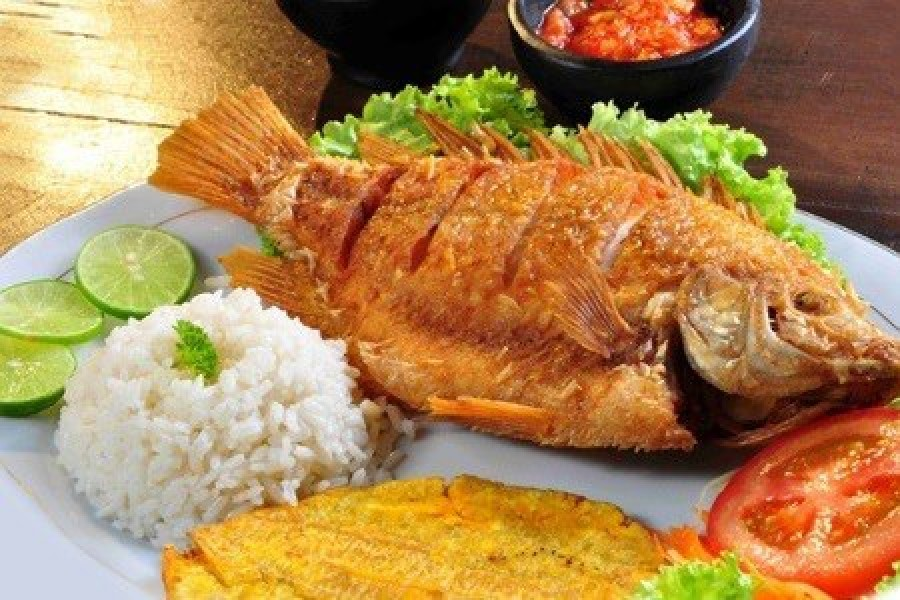
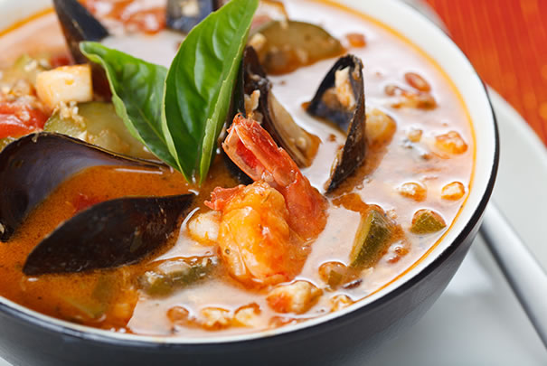

Plato tipico de la costa
En América Latina se suele emplear el término pescado frito a una preparación donde el pescado se puede preparar ya sea entero, en ruedas o en filetes. Es típico en las gastronomías chilena, colombiana y venezolana. En primer lugar se sazona el pescado (previamente limpio) con sal, pimienta y zumo de limón; se reboza en harina de trigo y se fríe en aceite vegetal. Se suelen servir con limón. Se emplean pescados como la tilapia, el róbalo, la merluza, el carite, el mero, el corocoro y el pargo, entre otros. En Colombia se suele acompañar con arroz con coco y patacones, en tanto que en Venezuela se acompaña con tostones y ensaladas frescas (típico de las costas) o con arepas (mayormente en Oriente)..

PABLO: El plato ideal para pasar en playa con arroZ de coco patacÓn y una cerveza bien fria, playa sol arena

MARIA: en estos dias estoy estoy de viaje por la costa y pienso probarlo.
Casuela de marisco
Colombia limita con el Océano Atlántico y el Océano Pacífico,los cuales proporcionan al país una buena variedad de mariscos y pescados. Esta deliciosa Cazuela de Mariscos es rápida de cocinar y perfecta para cenas elegantes o como un plato cena de fin de semana para toda la familia..
PAOLA: Me encanta este plato es delicioso y su prepación es muy facil.
MARIO: tengo tiempo que no lo pruebo pero sin duda alguna es muy delicioso.